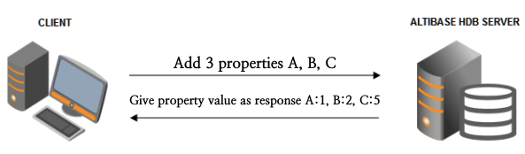
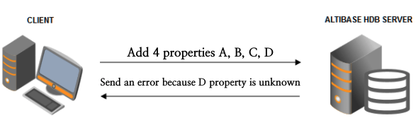

Symptom
Connection from ALTIBASE HDB client to Altibase server fails.
An error may occur in the following two cases. In the version, the first three digits are the major version, and the back digits are the patch version.
When the major version of the server and the client are the same, but the patch version of the client is later than that of the server.
When the client's major version is later than the server's major version.
# Client server
$ apre -v
Altibase Precompiler2(APRE) Ver.1 6.1.1.1.10 XEON_LINUX_redhat_Enterprise_ES4-64bit-6.1.1.1.10-release-GCC3.4.6 (xeon-redhat-linux-gnu) Mar 4 2013 09:43:18
# Altibase server version
$ altibase -v
version 6.1.1.0.0 XEON_LINUX_redhat_Enterprise_ES4-64bit-6.1.1.0.0-release-GCC3.4.6 (xeon-redhat-linux-gnu) Apr 18 2012 18:20:15, binary db version 6.1.1, meta version 5.9.1, cm protocol version 5.6.2, replication protocol version 6.1.1
# When connecting to the 6.1.1.0.0 server from a client whose major version is 6.1.1 and the patch version is 1.10
$ isql -u sys -p manager -s 127.0.0.1 -port 26110
-----------------------------------------------------------------
Altibase Client Query utility.
Release Version 6.1.1.1.10
Copyright 2000, ALTIBASE Corporation or its subsidiaries.
All Rights Reserved.
-----------------------------------------------------------------
ISQL_CONNECTION = TCP, SERVER = 127.0.0.1, PORT_NO = 26110
[ERR-4109C : Invalid session property]
# Client server
$ apre -v
Altibase Precompiler2(APRE) Ver.1 6.1.1.3.2 XEON_LINUX_redhat_Enterprise_ES4-64bit-6.1.1.3.2-release-GCC3.4.6 (xeon-redhat-linux-gnu) Aug 28 2013 17:54:46
# Altibase server version
$ altibase -v
version 5.5.1.4.10 XEON_LINUX_redhat_Enterprise_ES4-64bit-5.5.1.4.10-release-GCC3.4.6 (xeon-redhat-linux-gnu) Aug 14 2013 18:09:27, binary db version 5.4.1, meta version 5.9.1, cm protocol version 5.6.3, replication protocol version 5.6.1
# When connecting to the Altibase server 5.5.1.4.10 from the client version 6.1.1.3.2
$ isql -u sys -p manager -s 127.0.0.1 -port 25514
-----------------------------------------------------------------
Altibase Client Query utility.
Release Version 6.1.1.3.2
Copyright 2000, ALTIBASE Corporation or its subsidiaries.
All Rights Reserved.
-----------------------------------------------------------------
ISQL_CONNECTION = TCP, SERVER = 127.0.0.1, PORT_NO = 25514
[ERR-4109C : Invalid session property]
When error occurs within the same major version
ALTIBASE HDB 5.5.1
JDBC Client
When connecting to a server with a version earlier than 5.5.1.3.7 from a later version including ALTIBASE JDBC DRIVER version 5.5.1.3.7, the connection fails. (Example, JDBC driver version 5.5.1.3.7 -> ALTIBASE HDB server 5.5.1.3.6)
CLI Client
When connecting to a server with a version earlier than 6.1.1.1.10 from a later version client including 6.1.1.1.10, the connection fails. (Example, iSQL version 6.1.1.1.10 -> ALTIBASE HDB server 6.1.1.1.9)
Cause
This error occurs when a client connects to the server and requests a server property that the server does not know.
At the time of connection, the client requests the server properties necessary for client configuration to the ALTIBASE HDB server.
However, when a server property is added from a later version and a later version of the client connects to the lower version, an error occurs as follows.

Solution
Use the same or earlier version of the client as the ALTIBASE HDB server.
In order to use a later version of the client, the ALTIBASE HDB server version must also be patched or upgraded to the same version.
Reference
How to check ALTIBASE HDB server version (same for Unix/Linux/Windows)
Execute the following command in a shell prompt or DOS window.
$ altibase -v
Connect to the ALTIBASE HDB server and query with the query below.
iSQL> SELECT PRODUCT_VERSION FROM V$VERSION;
How to check the version of the Altibase client
When the Altibase client package is installed (Same for Unix/Linux/Windows)
$ apre -v
In the case of the ODBC driver
Check in the properties of the altiodbc.dll file in Windows Explorer.
In the case of the JDBC driver
$ java -jar Altibase.jar
{kind=link}
{kind=link}